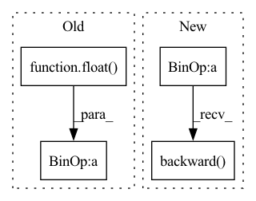

Pattern ID :39057
Before Change
loss_G = loss_Gmain
loss_G = loss_G * float( gain)
loss_G.backward() // 咩酱：gain即上文提到的这个阶段的训练间隔。
// Gpl: Apply path length regularization.
if do_Gpl:After Change
// if do_Dmain:
// loss4 += loss3
// loss4.backward() // 咩酱：gain即上文提到的这个阶段的训练间隔。
(real_logits * 0 + loss_Dreal + loss_Dr1).mean().mul(gain).backward()
return loss_numpy
def train_iter(self, optimizers=None):
phase_real_img = self.input[0]In pattern: SUPERPATTERN
Frequency: 4
Non-data size: 4
Instances Fragment ID: 111252066
Project Name: miemie2013/miemiegan
Commit Name: cf43a0a8db722386b89e71d5d33b472774867ea1
Time: 2022-02-24
Author: 53960695+miemie2013@users.noreply.github.com
File Name: mmgan/models/architectures/styleganv2ada_model.py
M Class Name: StyleGANv2ADAModel
N Class Name: StyleGANv2ADAModel
M Method Name: accumulate_gradients(8)
N Method Name: accumulate_gradients(8)
M Parent Class: torch.nn.Module
N Parent Class: torch.nn.Module
M File Name: mmgan/models/architectures/styleganv2ada_model.py
N File Name: mmgan/models/architectures/styleganv2ada_model.py
M Start Line: 148
M End Line: 236
N Start Line: 176
N End Line: 268
Before Change
loss_numpy["loss_Gmain"] = loss_Gmain.cpu().detach().numpy()
loss_G = loss_Gmain
loss_G = loss_G * float( gain)
with torch.autograd.profiler.record_function("Gmain_backward"):
loss_G.backward() // 咩酱：gain即上文提到的这个阶段的训练间隔。
if self.align_grad:
mapping = self.mapping.module if self.is_distributed else self.mappingAfter Change
// loss4 += loss3
with torch.autograd.profiler.record_function(name + "_backward"):
// loss4.backward() // 咩酱：gain即上文提到的这个阶段的训练间隔。
(real_logits * 0 + loss_Dreal + loss_Dr1).mean().mul(gain).backward()
if self.align_grad:
mapping = self.mapping.module if self.is_distributed else self.mapping
synthesis = self.synthesis.module if self.is_distributed else self.synthesis
discriminator = self.discriminator.module if self.is_distributed else self.discriminator Fragment ID: 111252071
Project Name: miemie2013/miemiegan
Commit Name: 308da226a2d1e0dc4f2c0543c80e1904d79a3bf1
Time: 2022-04-09
Author: 53960695+miemie2013@users.noreply.github.com
File Name: mmgan/models/architectures/styleganv2ada_model.py
M Class Name: StyleGANv2ADAModel
N Class Name: StyleGANv2ADAModel
M Method Name: accumulate_gradients(9)
N Method Name: accumulate_gradients(9)
M Parent Class:
N Parent Class:
M File Name: mmgan/models/architectures/styleganv2ada_model.py
N File Name: mmgan/models/architectures/styleganv2ada_model.py
M Start Line: 184
M End Line: 353
N Start Line: 208
N End Line: 356
Before Change
output = model(data_batch)
loss = loss_func(output, target_batch)
loss_ = loss.detach().clone()
loss.div_(math.ceil(float( len(data)) / args.batch_size))
loss.backward()
with torch.no_grad():After Change
output = model(data_batch)
loss = loss_func(output, target_batch)
loss_ = loss.detach().clone()
loss = loss / args.batches_per_allreduce
if args.horovod:
loss.backward()
else:
if i < args.batches_per_allreduce:
with model.no_sync():
loss.backward()
else:
loss.backward()
with torch.no_grad():
train_loss.update(loss_)
train_accuracy.update(accuracy(output, target_batch)) Fragment ID: 111252107
Project Name: gpauloski/kfac-pytorch
Commit Name: c3fcd61225f75c5c0e412d60183be6c62599bfae
Time: 2020-06-28
Author: gpauloski@yahoo.com
File Name: examples/cnn_utils/engine.py
M Class Name: AnonimousClass
N Class Name: AnonimousClass
M Method Name: train(9)
N Method Name: train(9)
M Parent Class:
N Parent Class:
M File Name: examples/cnn_utils/engine.py
N File Name: examples/cnn_utils/engine.py
M Start Line: 21
M End Line: 57
N Start Line: 21
N End Line: 65